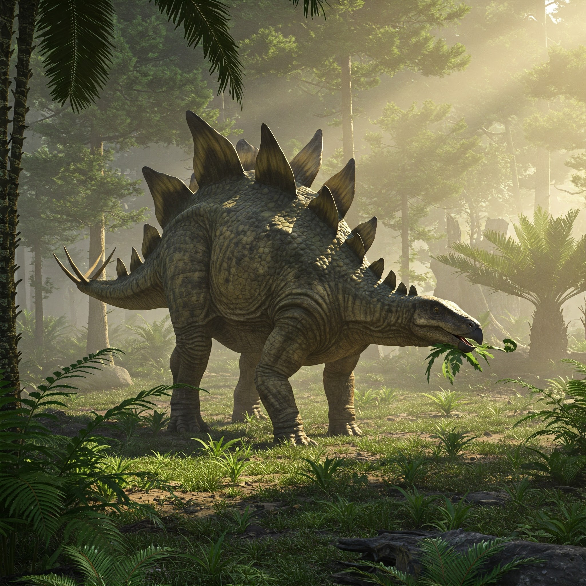
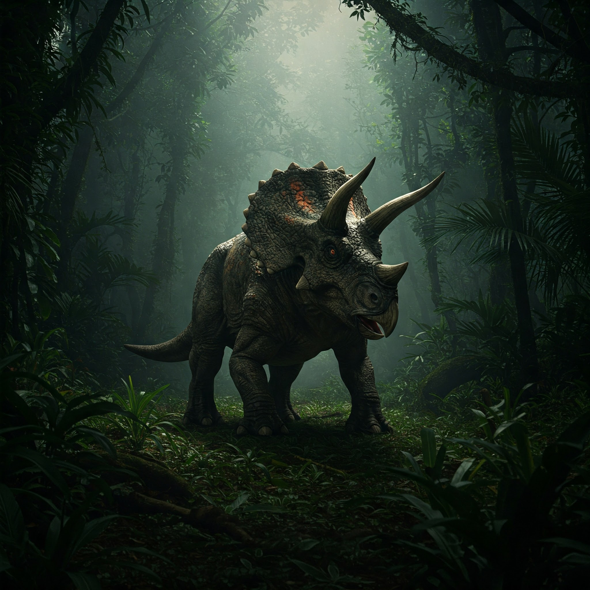
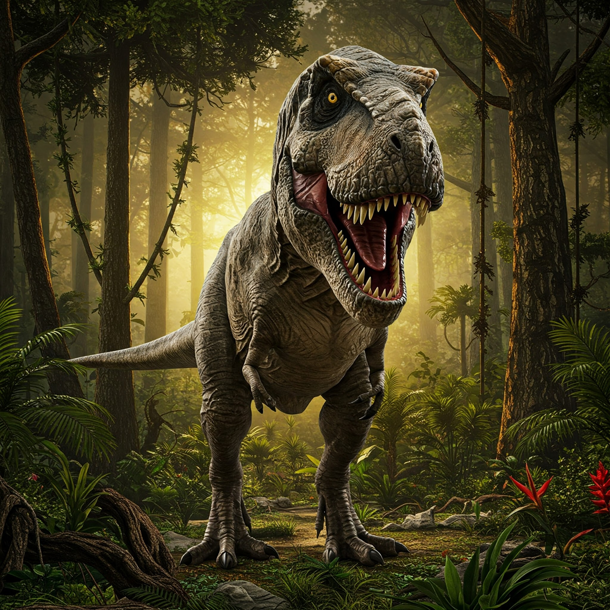
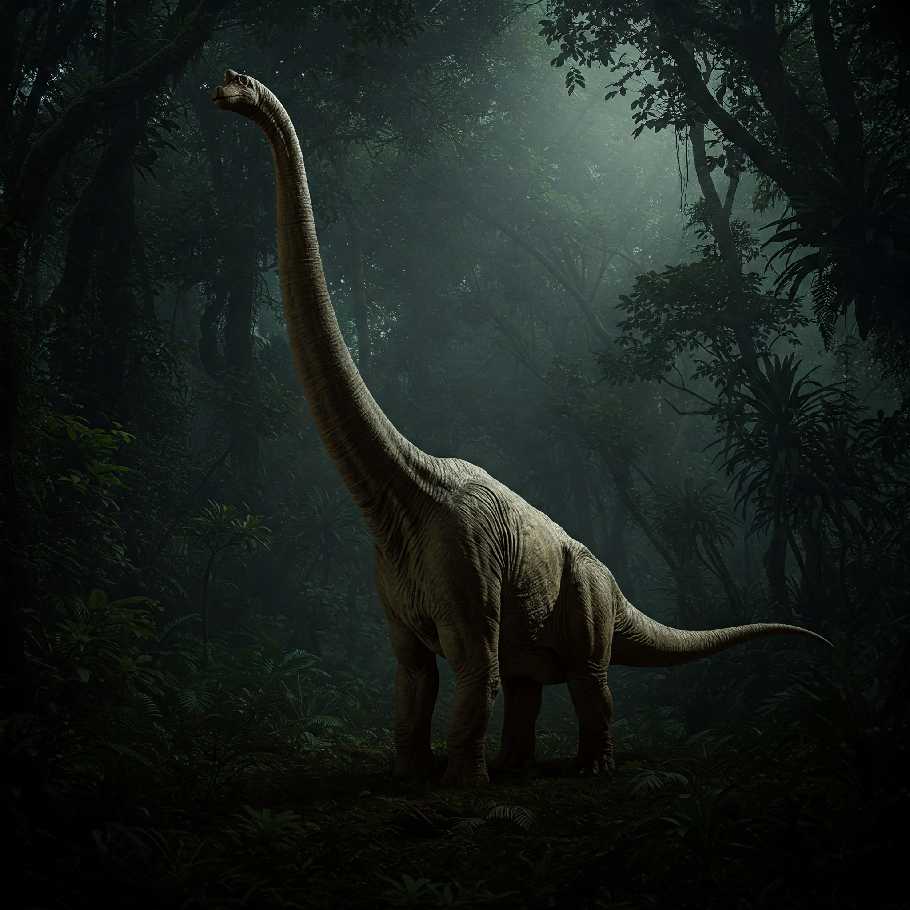
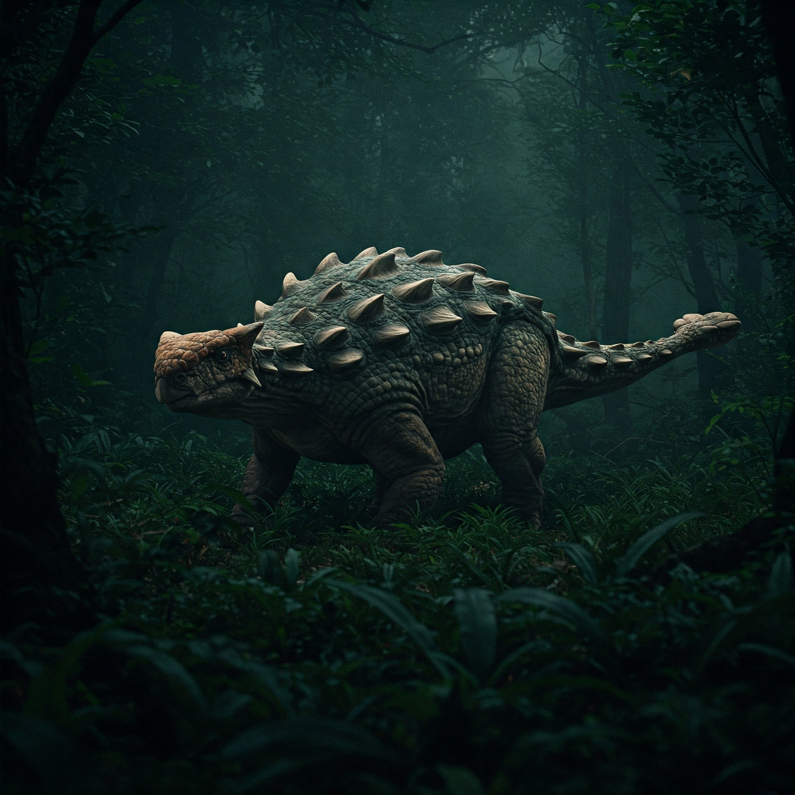
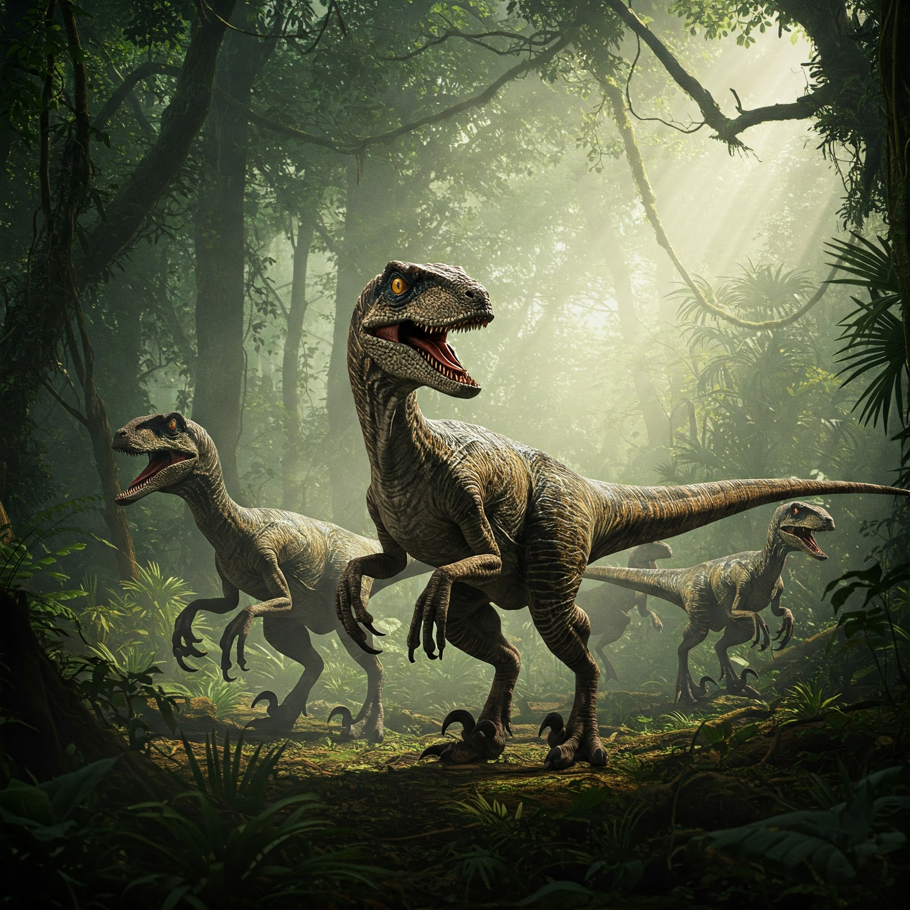
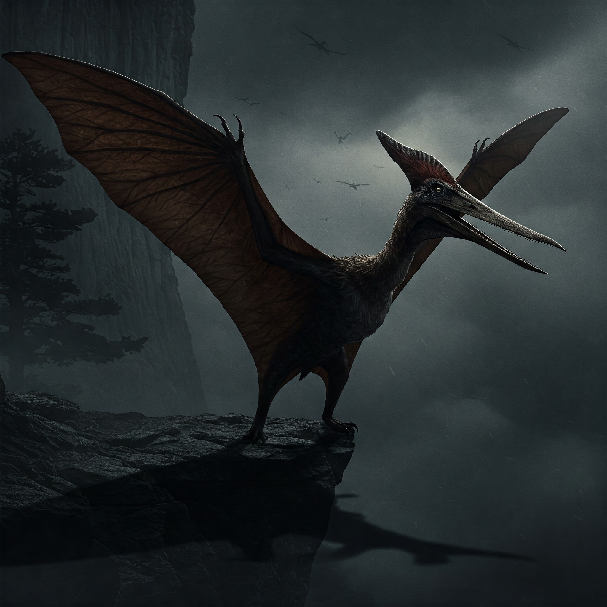

-
Estegossauro
Dinossauro herbívoro com placas ósseas enormes ao longo das costas e uma cauda com espinhos. Possui a habilidade de gerar campos de força com suas placas, protegendo-se de ataques e criando barreiras impenetráveis!
ATK/ 800 DEF/ 3500 -
Tricerátops
Dinossauro herbívoro, com três chifres e grande gola óssea que protege seu pescoço e sua cabeça. Possui a capacidade de gerar "onda de choque" com um impacto. Ao bater seus chifres com força, o tricerátops cria uma onda de energia capaz de derrubar predadores ou até mesmo destruir obstáculos à sua frente.
ATK/ 2000 DEF/ 1600 -
Tiranossauro
O tiranossauro rex é o maior e mais feroz carnívoro que existe, com uma mandíbula poderosa e dentes afiados, capaz de caçar grandes presas. Possui visão térmica aprimorada, permitindo que ele enxergue qualquer presa ou ameaça, mesmo no escuro, e em qualquer condição. Isso o torna um caçador imbatível, capaz de rastrear suas presas sem dificuldade, além de detectar movimentos sutis ao seu redor.
ATK/ 5000 DEF/ 2700 -
Braquiossauro
Dinossauro herbívoro gigante, com um pescoço longo. Ele se destaca por seu tamanho sobrenatural e aparência imponente. Possui o poder de controle sobre plantas e vegetação. Ele é capaz de fazer crescer rapidamente árvores e arbustos ao seu redor, para impedir que predadores se aproximem. Ele também pode formar barreiras naturais ou redes de raízes para se proteger ou capturar inimigos.
ATK/ 2300 DEF/ 3800 -
Anquilossauro
Dinossauro herbívoro blindado, com um corpo coberto por placas ósseas e uma cauda massiva e poderosa, que funciona como uma clava contra os predadores. Possui blindagem regenerativa. Ao ser atingido, ele tem a capacidade de regenerar suas placas e escudos rapidamente, tornando-se quase impenetrável. Isso faz dele um defensor imbatível, capaz de resistir a ataques e se recuperar instantaneamente para enfrentar qualquer ameaça.
ATK/ 2400 DEF/ 4000 -
Velociraptor
Dinossauro pequeno, ágil e inteligente, com garras afiadas e uma grande capacidade de caça em grupo. Ele é rápido e possui estratégias de ataque coordenadas, tornando-o um predador formidável. Possui inteligência telepática. Ele é capaz de se comunicar com outros velociraptores através de pensamentos, coordenando ataques com precisão e sem a necessidade de vocalizações, tornando-se ainda mais letal em emboscadas e caçadas em grupo.
ATK/ 4300 DEF/ 2100 -
Pterodactilo
Réptil voador com asas feitas de uma membrana de pele esticada entre os dedos. Ele tem um corpo leve e uma habilidade impressionante para voar grandes distâncias. Tem a habilidade de manipulação de ventos. Ele cria tempestades de vento poderosas ao bater suas asas, controlando o clima ao seu redor para se esconder, confundir predadores ou até mesmo atacar, gerando rajadas de vento que podem derrubar árvores ou desestabilizar suas presas.
ATK/ 2900 DEF/ 1700